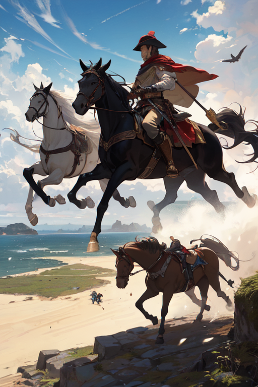

Em "Cavaleiros da Esperança", os jogadores são transportados para um reino medieval,
imersos em uma narrativa épica de ação e aventura. O jogo segue a jornada de um grupo
de destemidos cavaleiros, defensores da esperança em meio a um cenário repleto de desafios
e mistérios. Enfrente inimigos formidáveis, desvende segredos ancestrais e vivencie uma
história rica em emoção e coragem.
Recursos Principais
Ação e Aventura: Experimente combates emocionantes, explorando cenários exuberantes enquanto
enfrenta criaturas lendárias e desvenda os segredos de um reino mágico.
Mundo Medieval: Adentre castelos imponentes, atravesse florestas encantadas e visite vilarejos
pitorescos enquanto desbrava um mundo medieval ricamente detalhado.
História Envolvente: A trama intrincada de "Cavaleiros da Esperança" é repleta de
reviravoltas, amizades inabaláveis e a busca pela redenção em um reino assolado pelo caos.
Disponibilidade
"Cavaleiros da Esperança" está atualmente em desenvolvimento,
prometendo uma experiência imersiva e inesquecível para todos os entusiastas
de RPG medieval. Fique atento para mais informações sobre o lançamento!